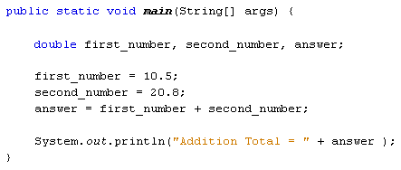
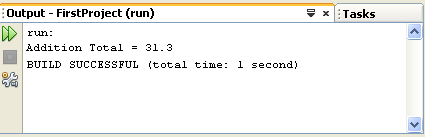

The double variable is also used to hold floating point values. A floating point value is one like 8.7, 12.5, 10.1. In other words, it has a "point something" at the end. If you try to store a floating point value in an int variable, NetBeans will underline the faulty code. If you try to run the programme, the compiler will throw up an error message.
Let's get some practise using doubles.
Change the int from your previous code to double. So change this:
int first_number, second_number, answer;
to this:
double first_number, second_number, answer;
Now change the values being stored:
first_number = 10.5;
second_number = 20.8;
Leave the rest of the programme as it is. Your coding window should look like this:

Run your programme again. The output window should look like this:

Try changing the values stored in first_number and second_number. Use any values you like. Run your programme and see what happens.
In the next part, you'll learn about two more Java variable types: short and float.